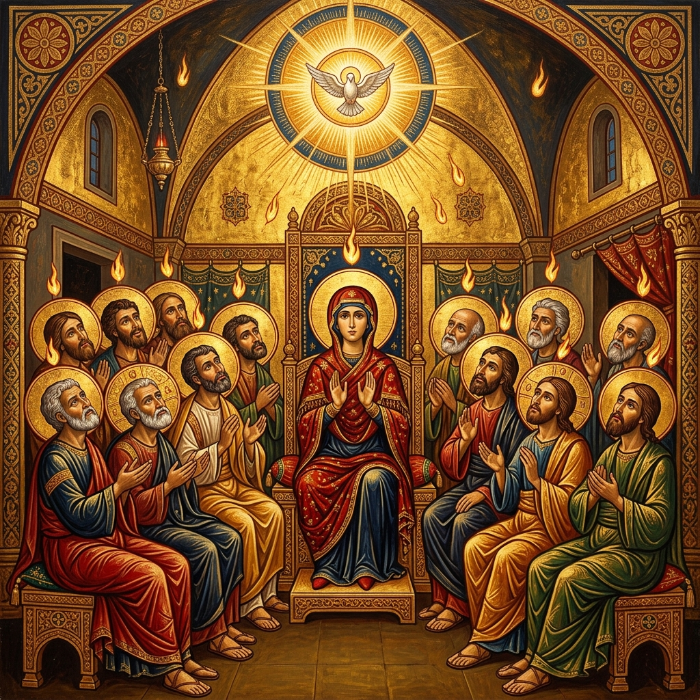
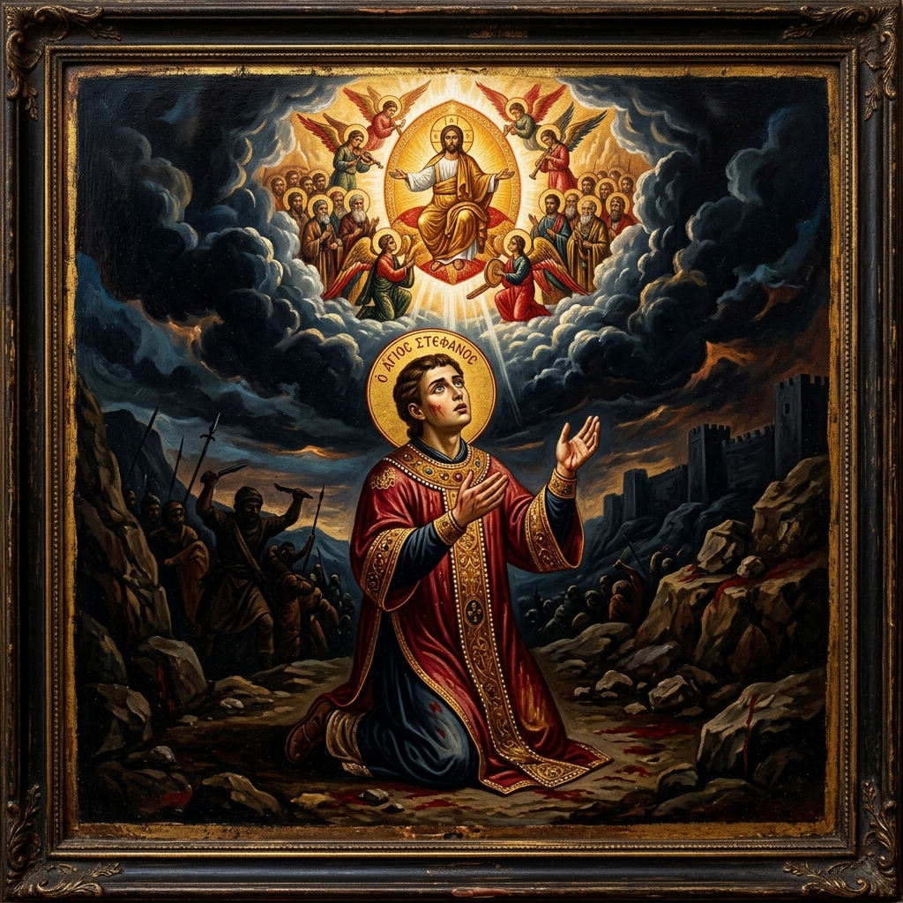
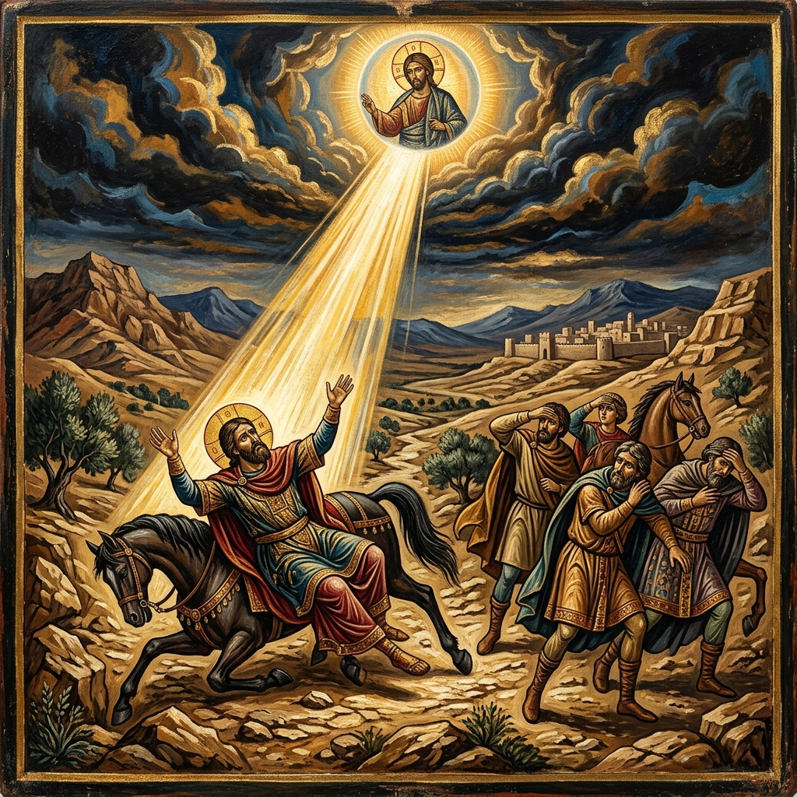
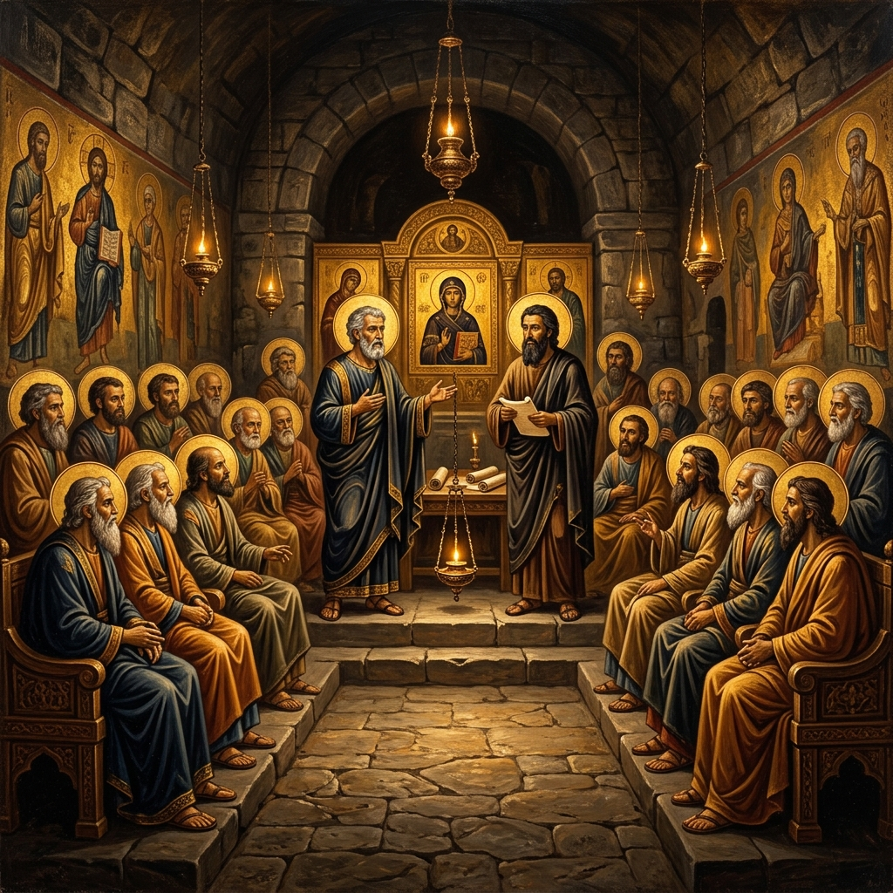
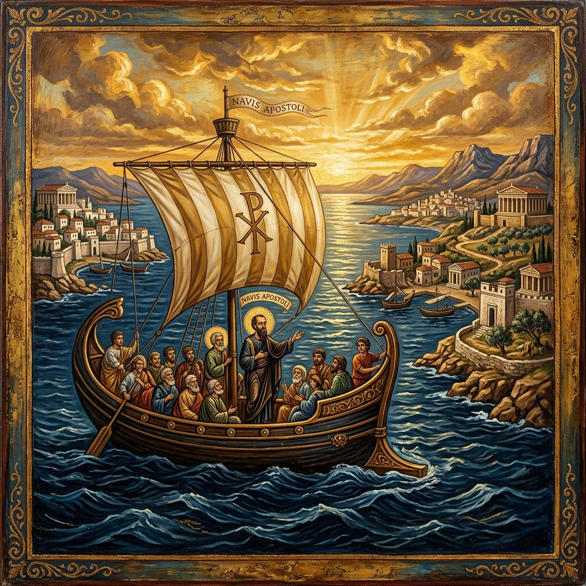
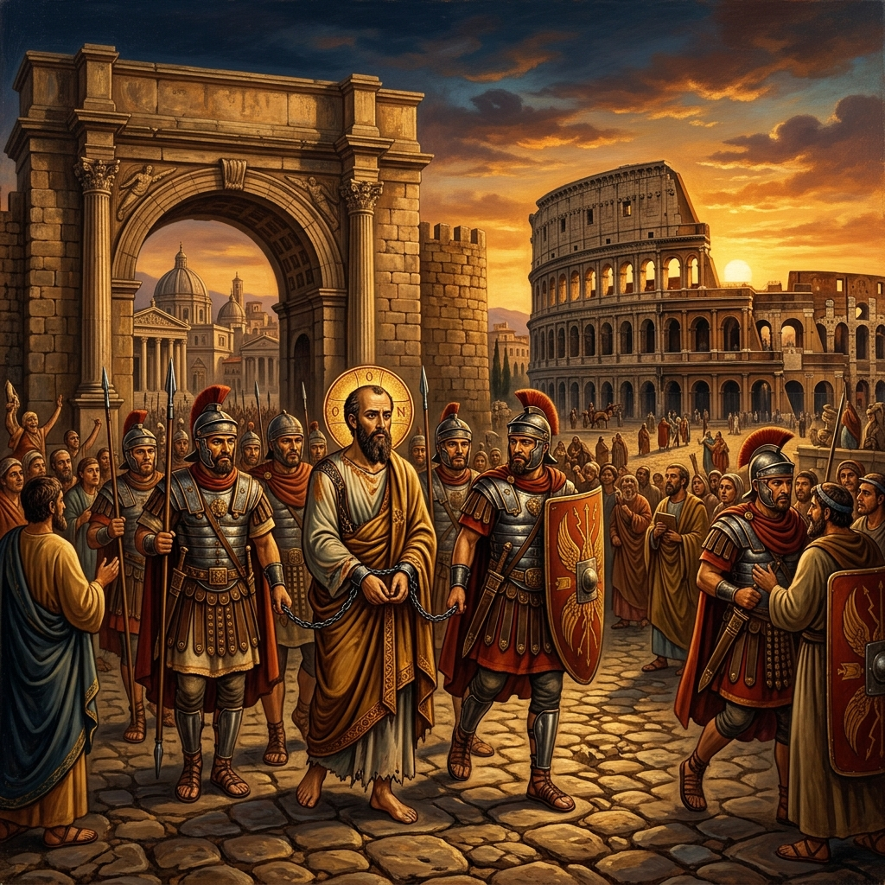
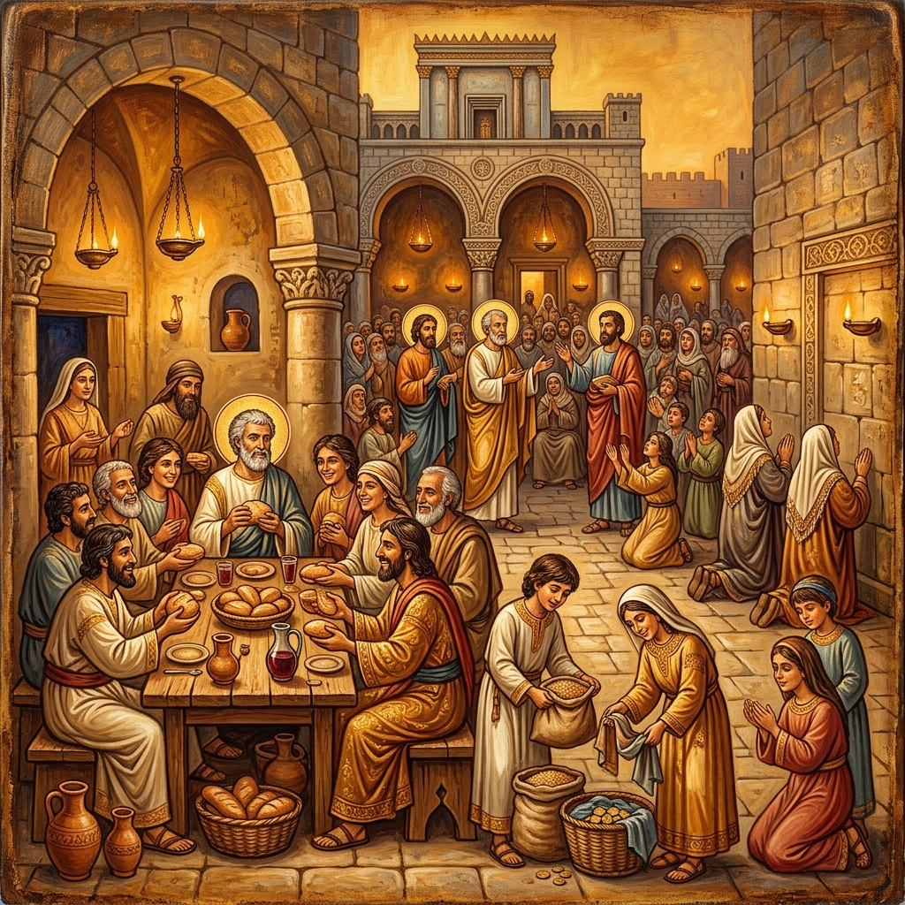

A Coptic Orthodox Study
Chapters 1 — 28
The birth of the Church at Pentecost, the witness of the Apostles, and the unstoppable spread of the Gospel from Jerusalem to Rome — explored through the lens of the Church Fathers and the Coptic Orthodox Tradition.
At a Glance
Chapters 1–2
Christ ascends to heaven with the promise of the Holy Spirit. On the day of Pentecost, the Spirit descends in tongues of fire. Peter preaches and 3,000 souls are baptised.
Chapters 3–5
Peter heals a lame man at the Beautiful Gate. The believers share all things in common. Ananias and Sapphira fall dead for lying to the Holy Spirit. The apostles are arrested but freed by an angel.
Chapters 6–8
Stephen, full of the Spirit, becomes the first Christian martyr. Persecution scatters the Church, and Philip preaches in Samaria and baptises the Ethiopian eunuch.
Chapters 9–12
Saul encounters Christ on the road to Damascus and becomes Paul. Peter's vision and the conversion of Cornelius open the door to the Gentiles. Herod kills James and imprisons Peter, but an angel delivers him.
Chapters 13–15
Paul and Barnabas are sent by the Holy Spirit to preach across Cyprus and Asia Minor. The Council of Jerusalem settles the question: Gentile believers need not be circumcised.
Chapters 16–20
Paul crosses into Europe — Philippi, Thessalonica, Athens, Corinth, Ephesus. Churches are planted, riots erupt, and the Gospel reaches the heart of the Greco-Roman world.
Chapters 21–28
Paul is arrested in Jerusalem, testifies before governors and kings, survives shipwreck, and finally reaches Rome — where he preaches the kingdom of God "without hindrance."
Apostolic History

Acts 2
The Holy Spirit descends upon the apostles in the upper room in Jerusalem. Tongues of fire rest on each of them. They speak in other languages, and Peter preaches — 3,000 are baptised in a single day.
c. 30/33 AD
Acts 7
Stephen, the first deacon and first martyr, gives a sweeping defence of the faith before the Sanhedrin. He sees "the heavens opened and the Son of Man standing at the right hand of God" — and is stoned to death while praying for his killers.
c. 34 AD
Acts 9
"Saul, Saul, why are you persecuting Me?" A blinding light from heaven, a voice, and the fiercest persecutor of the Church becomes its greatest apostle. Ananias baptises him and the scales fall from his eyes.
c. 34–36 ADActs 10
Peter receives a vision: "What God has cleansed you must not call common." He preaches to the Roman centurion Cornelius, and the Holy Spirit falls upon the Gentiles — a turning point in salvation history.
c. 40 AD
Acts 15
The first great council of the Church. The apostles and elders gather to decide: must Gentile converts be circumcised? "It seemed good to the Holy Spirit, and to us" — the Gentiles are freed from the Mosaic law.
c. 49 AD
Acts 13–20
Paul traverses the Roman Empire — Cyprus, Asia Minor, Macedonia, Greece. He plants churches in Philippi, Thessalonica, Corinth, and Ephesus. The Gospel crosses from Asia into Europe.
c. 46–57 AD
Acts 28
After shipwreck on Malta and a miraculous survival, Paul finally arrives in Rome. He preaches the kingdom of God for two years "with all confidence, no one forbidding him" — the Gospel has reached the capital of the world.
c. 60–62 ADIn-Depth Study
Chapters 1–2
The book opens where Luke's Gospel ends — the risen Christ spends 40 days teaching the apostles about the kingdom of God. He commands them to wait in Jerusalem for the promise of the Father: "You shall receive power when the Holy Spirit has come upon you; and you shall be witnesses to Me… to the end of the earth" (1:8). He ascends to heaven from the Mount of Olives, and two angels promise His return.
The Election of Matthias — Before Pentecost, the apostles gather to replace Judas Iscariot. Peter quotes the Psalms: "Let another take his office." Two candidates are proposed — Joseph called Barsabas, and Matthias. They pray and cast lots; Matthias is numbered with the eleven. The Church acts even before the Spirit comes — guided by Scripture, prayer, and apostolic authority.
The Day of Pentecost — the birthday of the Church. A rushing mighty wind fills the upper room. Tongues of fire rest upon each of the apostles. They speak in other languages. Devout Jews from every nation are bewildered — "we hear them speaking in our own tongues the wonderful works of God." Peter stands and preaches the first Christian sermon, quoting Joel: "I will pour out My Spirit on all flesh." He proclaims that Jesus, whom they crucified, is both Lord and Christ. The crowd is "cut to the heart" — 3,000 souls are baptised that day.
The Four Marks of the Early Church — "They continued steadfastly in the apostles' doctrine and fellowship, in the breaking of bread, and in prayers" (2:42). The Coptic Church sees these four pillars — teaching, community, Eucharist, and prayer — as the unchanging foundation of Church life from Pentecost to the present day.
"But you shall receive power when the Holy Spirit has come upon you; and you shall be witnesses to Me in Jerusalem, and in all Judea and Samaria, and to the end of the earth."
Acts 1:8
"Then there appeared to them divided tongues, as of fire, and one sat upon each of them. And they were all filled with the Holy Spirit and began to speak with other tongues, as the Spirit gave them utterance."
Acts 2:3–4
"They continued steadfastly in the apostles' doctrine and fellowship, in the breaking of bread, and in prayers… And the Lord added to the church daily those who were being saved."
Acts 2:42, 47

Chapters 3–5
The Healing at the Beautiful Gate — Peter and John go up to the temple at the hour of prayer. A man lame from birth sits begging at the gate called Beautiful. Peter fixes his eyes on him: "Silver and gold I do not have, but what I do have I give you: in the name of Jesus Christ of Nazareth, rise up and walk!" He takes the man by the right hand and lifts him up — immediately his feet and ankle bones receive strength. The man enters the temple walking, leaping, and praising God. Peter preaches to the astonished crowd: "The God of our fathers glorified His Servant Jesus… and His name, through faith in His name, has made this man strong."
Peter and John Before the Sanhedrin — The rulers, elders, and scribes question them: "By what power or by what name have you done this?" Peter, filled with the Holy Spirit, declares: "There is no other name under heaven given among men by which we must be saved" (4:12). The council marvels at the boldness of these "uneducated and untrained men" and recognises that they had been with Jesus.
The early community lives in radical unity: "The multitude of those who believed were of one heart and one soul; neither did anyone say that any of the things he possessed was his own" (4:32). Barnabas sells a field and lays the money at the apostles' feet. But sin infiltrates — Ananias and Sapphira sell property and secretly keep back part of the price while claiming to give everything. Peter confronts Ananias: "Why has Satan filled your heart to lie to the Holy Spirit?… You have not lied to men but to God." Both fall dead — a solemn warning that the Holy Spirit cannot be deceived. Great fear comes upon the whole Church.
Gamaliel's Counsel — The apostles are arrested again, but an angel opens the prison doors at night. Brought before the Sanhedrin, the Pharisee Gamaliel gives wise advice: "If this plan or this work is of men, it will come to nothing; but if it is of God, you cannot overthrow it — lest you even be found to fight against God" (5:38–39). The apostles are beaten and released, rejoicing that they were counted worthy to suffer shame for His name.
"Silver and gold I do not have, but what I do have I give you: In the name of Jesus Christ of Nazareth, rise up and walk."
Acts 3:6
"Nor is there salvation in any other, for there is no other name under heaven given among men by which we must be saved."
Acts 4:12
"Now the multitude of those who believed were of one heart and one soul; neither did anyone say that any of the things he possessed was his own, but they had all things in common."
Acts 4:32
"If this plan or this work is of men, it will come to nothing; but if it is of God, you cannot overthrow it — lest you even be found to fight against God."
Acts 5:38–39
Chapters 6–8
The Seven Deacons — A dispute arises because the Hellenist widows are being neglected in the daily distribution. The Twelve say: "It is not desirable that we should leave the word of God and serve tables." Seven men "full of the Holy Spirit and wisdom" are chosen — among them Stephen and Philip. The apostles pray and lay hands on them. This is the origin of the diaconate — the Coptic Church traces its order of deacons directly to this moment.
Stephen's Speech and Martyrdom — Stephen, "full of grace and power," performs great signs. False witnesses accuse him of blasphemy. His face appears "like the face of an angel" (6:15). Before the Sanhedrin, he delivers the longest speech in Acts — a sweeping history from Abraham to Solomon, showing Israel's repeated pattern of rejecting God's messengers. He accuses them: "You stiff-necked people! You always resist the Holy Spirit!" Then, gazing into heaven: "Look! I see the heavens opened and the Son of Man standing at the right hand of God!" They rush upon him and stone him. Kneeling, he cries: "Lord, do not charge them with this sin." A young man named Saul guards the cloaks of the executioners.
Philip in Samaria — Persecution scatters the believers throughout Judea and Samaria — but this becomes the engine of mission. Philip preaches in Samaria with great success, performing signs, casting out unclean spirits, and healing the paralysed. Simon the Magician believes and is baptised, but later tries to buy the gift of the Holy Spirit with money. Peter rebukes him severely: "Your money perish with you, because you thought that the gift of God could be purchased with money!" (8:20).
The Ethiopian Eunuch — An angel directs Philip to a desert road south of Jerusalem. There he meets a court official of Queen Candace of Ethiopia, sitting in his chariot reading the scroll of Isaiah: "He was led as a sheep to the slaughter." Philip asks: "Do you understand what you are reading?" The eunuch replies: "How can I, unless someone guides me?" Philip opens his mouth and, beginning from this Scripture, preaches Jesus to him. Coming to water, the eunuch says: "See, here is water. What hinders me from being baptised?" Philip baptises him, and the Spirit snatches Philip away. The eunuch goes on his way rejoicing. The Coptic tradition treasures this story as evidence of Christianity reaching Africa in the apostolic age itself.
"And they chose Stephen, a man full of faith and the Holy Spirit… And all who sat in the council, looking steadfastly at him, saw his face as the face of an angel."
Acts 6:5, 15
"Look! I see the heavens opened and the Son of Man standing at the right hand of God!"
Acts 7:56
"Then he knelt down and cried out with a loud voice, 'Lord, do not charge them with this sin.' And when he had said this, he fell asleep."
Acts 7:60
"So the eunuch said, 'I ask you, of whom does the prophet say this, of himself or of some other man?' Then Philip opened his mouth, and beginning at this Scripture, preached Jesus to him."
Acts 8:34–35
Chapters 9–12
The Damascus Road — Saul, "breathing threats and murder against the disciples," travels to Damascus with letters from the high priest to arrest Christians. Suddenly a light from heaven strikes him down. "Saul, Saul, why are you persecuting Me?" "Who are you, Lord?" "I am Jesus, whom you are persecuting." Blinded for three days, he neither eats nor drinks. The Lord appears in a vision to a disciple named Ananias: "Go… for he is a chosen vessel of Mine to bear My name before Gentiles, kings, and the children of Israel." Ananias lays hands on him — something like scales falls from his eyes — he is baptised and filled with the Holy Spirit. Immediately he preaches in the synagogues that Jesus is the Son of God.
Peter Raises Tabitha — In Joppa, a beloved disciple named Tabitha (Dorcas), "full of good works and charitable deeds," falls ill and dies. The widows she had clothed weep around her body. Peter kneels and prays: "Tabitha, arise." She opens her eyes and sits up. This miracle — echoing Christ raising Jairus's daughter — shows that the apostles carry the very power of their Master.
Peter and Cornelius — Peter receives a vision three times: a great sheet descends from heaven filled with unclean animals. A voice: "Rise, Peter; kill and eat." Peter objects. The voice: "What God has cleansed you must not call common." Simultaneously, the Roman centurion Cornelius — a devout, God-fearing man — receives an angelic vision directing him to send for Peter. Peter preaches in Cornelius's house, and while he is still speaking, the Holy Spirit falls upon all the Gentiles who hear — a second Pentecost. The Jewish believers are astonished. Peter orders them to be baptised. The wall between Jew and Gentile begins to fall.
Peter's Miraculous Escape — King Herod Agrippa I kills the Apostle James the son of Zebedee with the sword — the first apostolic martyr. He then imprisons Peter, chained between two soldiers, guarded by four squads of soldiers. The Church prays without ceasing. The night before his trial, an angel appears — a light shines in the cell, the chains fall off Peter's hands, the iron gate opens by itself. Peter goes to the house of Mary, the mother of John Mark, where believers are praying. The servant girl Rhoda is so overjoyed she forgets to open the door. Herod, finding Peter gone, executes the guards. Shortly after, Herod himself is struck down by an angel for accepting divine worship: "he was eaten by worms and died" (12:23).
"Then Saul, still breathing threats and murder against the disciples of the Lord… suddenly a light shone around him from heaven. Then he fell to the ground, and heard a voice saying to him, 'Saul, Saul, why are you persecuting Me?'"
Acts 9:1, 3–4
"But the Lord said to him, 'Go, for he is a chosen vessel of Mine to bear My name before Gentiles, kings, and the children of Israel. For I will show him how many things he must suffer for My name's sake.'"
Acts 9:15–16
"While Peter was still speaking these words, the Holy Spirit fell upon all those who heard the word. And those of the circumcision who believed were astonished… because the gift of the Holy Spirit had been poured out on the Gentiles also."
Acts 10:44–45
"Peter was therefore kept in prison, but constant prayer was offered to God for him by the church… Now behold, an angel of the Lord stood by him, and a light shone in the prison; and he struck Peter on the side and raised him up, saying, 'Arise quickly!' And his chains fell off his hands."
Acts 12:5, 7
Chapters 13–15
The First Mission — At Antioch, while the prophets and teachers worship and fast, the Holy Spirit speaks: "Separate to Me Barnabas and Saul for the work to which I have called them." They sail to Cyprus, where they confront the sorcerer Bar-Jesus (Elymas) — Paul, filled with the Spirit, strikes him temporarily blind. The proconsul Sergius Paulus believes, "astonished at the teaching of the Lord."
Crossing to Asia Minor, Paul preaches a powerful sermon in the synagogue at Pisidian Antioch, declaring: "Through this Man is preached to you the forgiveness of sins; and by Him everyone who believes is justified" (13:38–39). In Iconium, the city is divided. In Lystra, Paul heals a man crippled from birth — the crowd tries to worship them as Zeus and Hermes. Paul and Barnabas tear their clothes: "We also are men with the same nature as you!" Jews from Antioch arrive, stone Paul, drag him outside the city, and leave him for dead. But the disciples gather around him, and he rises up and goes back into the city. They continue to Derbe, appoint elders in every church, and return to Antioch.
The Council of Jerusalem (c. 49 AD) — the most significant event in Acts after Pentecost. Judaizers from Judea demand: "Unless you are circumcised according to the custom of Moses, you cannot be saved." A great debate ensues. Peter stands and testifies: "God, who knows the heart, acknowledged them by giving them the Holy Spirit, just as He did to us, and made no distinction between us and them." Barnabas and Paul recount the signs and wonders God worked among the Gentiles. James renders the final decision, citing the prophet Amos. The letter to the Gentile churches reads: "It seemed good to the Holy Spirit, and to us, to lay upon you no greater burden than these necessary things." The Coptic Church sees this as the model for all ecumenical councils — the Holy Spirit guiding the Church into truth through conciliar deliberation.
The Separation of Paul and Barnabas — A sharp disagreement arises over John Mark, who had deserted them earlier. Barnabas wants to take him; Paul refuses. They part ways — Barnabas takes Mark to Cyprus, Paul takes Silas to Syria and Cilicia. Even apostolic partnerships face human conflict — yet God uses the division to double the mission. Mark would later write the Gospel that bears his name and become the founder of the Church of Alexandria.
"As they ministered to the Lord and fasted, the Holy Spirit said, 'Now separate to Me Barnabas and Saul for the work to which I have called them.'"
Acts 13:2
"Through this Man is preached to you the forgiveness of sins; and by Him everyone who believes is justified from all things from which you could not be justified by the law of Moses."
Acts 13:38–39
"For it seemed good to the Holy Spirit, and to us, to lay upon you no greater burden than these necessary things."
Acts 15:28
Chapters 16–20
The Macedonian Call — Paul and Silas, joined by Timothy and later Luke (the "we" passages begin), are forbidden by the Spirit from preaching in Asia. At Troas, Paul sees a vision of a man from Macedonia: "Come over to Macedonia and help us." The Gospel crosses into Europe.
Philippi — Lydia, a seller of purple from Thyatira, becomes the first European convert: "The Lord opened her heart to heed the things spoken by Paul." She and her household are baptised. Later, Paul casts a spirit of divination out of a slave girl, enraging her owners. Paul and Silas are beaten and thrown into the inner prison, their feet in stocks. At midnight they sing hymns to God — suddenly an earthquake shakes the foundations, every door opens, every chain falls off. The jailer, about to kill himself, is stopped by Paul: "Do yourself no harm, for we are all here." Trembling, he asks: "Sirs, what must I do to be saved?" "Believe on the Lord Jesus Christ, and you will be saved, you and your household." He and his family are baptised that same hour of the night.
Thessalonica and Berea — In Thessalonica, Paul reasons from the Scriptures for three Sabbaths, "opening and demonstrating that the Christ had to suffer and rise again from the dead." Some believe, but jealous opponents form a mob. The believers send Paul away by night to Berea, where the Jews are described as "more fair-minded" — "they received the word with all readiness, and searched the Scriptures daily to find out whether these things were so" (17:11).
Athens — The Areopagus Address — Paul's spirit is provoked by the city full of idols. He debates with Epicurean and Stoic philosophers, who bring him to the Areopagus. His speech is a masterpiece of contextual evangelism: "The God who made the world and everything in it… does not dwell in temples made with hands." He quotes their own poets: "In Him we live and move and have our being." He declares the resurrection — some mock, but others believe, including Dionysius the Areopagite and a woman named Damaris.
Corinth — Paul stays 18 months, living with Aquila and Priscilla, tentmakers like himself. The Lord speaks to him in a vision: "Do not be afraid, but speak… for I have many people in this city." Ephesus — extraordinary miracles occur; even handkerchiefs from Paul's body heal the sick. The sons of Sceva, Jewish exorcists, try to use Jesus' name without knowing Him — the evil spirit answers: "Jesus I know, and Paul I know; but who are you?" and overpowers them. Many who practised magic bring their books and burn them publicly — the value: 50,000 pieces of silver. A riot erupts when the silversmith Demetrius fears for the trade in idols of Artemis; the crowd chants "Great is Artemis of the Ephesians!" for two hours.
Paul's Farewell at Miletus — One of the most moving passages in Acts. Paul summons the Ephesian elders and speaks with tears: "I have coveted no one's silver or gold… I have shown you that by working hard we must help the weak, remembering the words of the Lord Jesus, that He said: 'It is more blessed to give than to receive.'" He warns of "savage wolves" who will enter among them. They kneel and pray together, weeping and embracing — "sorrowing most of all because he said that they would see his face no more."
"And a vision appeared to Paul in the night. A man of Macedonia stood and pleaded with him, saying, 'Come over to Macedonia and help us.'"
Acts 16:9
"Believe on the Lord Jesus Christ, and you will be saved, you and your household."
Acts 16:31
"These were more fair-minded than those in Thessalonica, in that they received the word with all readiness, and searched the Scriptures daily to find out whether these things were so."
Acts 17:11
"God, who made the world and everything in it, since He is Lord of heaven and earth, does not dwell in temples made with hands… for in Him we live and move and have our being."
Acts 17:24, 28
"I have shown you in every way, by labouring like this, that you must support the weak. And remember the words of the Lord Jesus, that He said, 'It is more blessed to give than to receive.'"
Acts 20:35
Chapters 21–28
The Prophet Agabus — Paul journeys toward Jerusalem. At Caesarea, the prophet Agabus takes Paul's belt, binds his own hands and feet, and declares: "So shall the Jews at Jerusalem bind the man who owns this belt, and deliver him into the hands of the Gentiles." The believers weep and beg Paul not to go. His answer: "What do you mean by weeping and breaking my heart? For I am ready not only to be bound, but also to die at Jerusalem for the name of the Lord Jesus." They cease, saying: "The will of the Lord be done."
Arrest in the Temple — In Jerusalem, Jews from Asia see Paul in the temple and stir up a mob: "Men of Israel, help! This is the man who teaches all men everywhere against the people, the law, and this place!" They drag him out and try to kill him. The Roman commander rescues him with soldiers. Paul, standing on the stairs, speaks to the crowd in Hebrew, recounting his conversion on the Damascus road. They listen until he mentions the Gentiles — then erupt: "Away with such a fellow from the earth, for he is not fit to live!"
Before the Sanhedrin — Paul divides the council by declaring: "I am a Pharisee, the son of a Pharisee; concerning the hope and resurrection of the dead I am being judged!" A plot to assassinate him is uncovered by Paul's nephew, who warns the commander. Paul is transferred under heavy guard — 200 soldiers, 70 horsemen, 200 spearmen — to Governor Felix in Caesarea. The following night, the Lord stands by Paul: "Be of good cheer, Paul; for as you have testified for Me in Jerusalem, so you must also bear witness at Rome."
Before Felix, Festus, and Agrippa — Paul is held in Caesarea for two years under Felix, who hopes for a bribe. When Festus succeeds him, Paul appeals to Caesar: "I appeal to Caesar!" Before his departure, King Agrippa II and Bernice come to hear him. Paul gives the most eloquent retelling of his conversion and declares: "I was not disobedient to the heavenly vision." Agrippa responds: "You almost persuade me to become a Christian." Paul answers: "I would to God that not only you, but also all who hear me today, might become both almost and altogether such as I am, except for these chains."
The Voyage to Rome — the most dramatic narrative in Acts. Luke records the journey with vivid detail. A storm called Euroclydon batters the ship for fourteen days — "neither sun nor stars appeared for many days, and all hope that we would be saved was finally given up." Paul stands among the despairing crew: "An angel of the God to whom I belong and whom I serve stood beside me this night, saying, 'Do not be afraid, Paul; you must be brought before Caesar.'" He breaks bread, giving thanks to God before them all. The ship runs aground on Malta; all 276 souls reach land safely.
Malta and Rome — On Malta, Paul gathers sticks for a fire and a viper fastens on his hand. The natives expect him to swell up and die; when he shakes it off unharmed, they declare he is a god. Paul heals the father of Publius, the chief of the island, and many others come and are healed. After three months, they sail to Rome. The brothers in Rome come out to meet Paul at the Forum of Appius — "when Paul saw them, he thanked God and took courage." He is allowed to live by himself with a soldier guarding him. He gathers the Jewish leaders, testifies about the kingdom of God, and preaches for two whole years in his rented house, "preaching the kingdom of God and teaching the things which concern the Lord Jesus Christ with all confidence, no one forbidding him" — the triumphant, open-ended final line of Acts. The Gospel has reached the capital of the world.
"What do you mean by weeping and breaking my heart? For I am ready not only to be bound, but also to die at Jerusalem for the name of the Lord Jesus."
Acts 21:13
"But the following night the Lord stood by him and said, 'Be of good cheer, Paul; for as you have testified for Me in Jerusalem, so you must also bear witness at Rome.'"
Acts 23:11
"Then Agrippa said to Paul, 'You almost persuade me to become a Christian.' And Paul said, 'I would to God that… all who hear me today, might become both almost and altogether such as I am, except for these chains.'"
Acts 26:28–29
"Paul dwelt two whole years in his own rented house, and received all who came to him, preaching the kingdom of God and teaching the things which concern the Lord Jesus Christ with all confidence, no one forbidding him."
Acts 28:30–31
The Birth of the Church
The defining moment of the Book of Acts — the fulfilment of Christ's promise, the outpouring of the Holy Spirit, and the birth of the Church. Everything in Acts flows from this event.
"When the Day of Pentecost had fully come, they were all with one accord in one place. And suddenly there came a sound from heaven, as of a rushing mighty wind, and it filled the whole house where they were sitting."
Acts 2:1–2
Divided tongues "as of fire" rested on each apostle — not above them collectively, but on each one individually. The Holy Spirit fills every believer personally. The Coptic Church celebrates Pentecost as one of the seven major feasts.
At Babel, God confused the languages to scatter humanity. At Pentecost, the Spirit enables every nation to hear the Gospel in their own tongue — the Church Fathers see this as the reversal of Babel and the reunification of the human race in Christ.
"Repent, and let every one of you be baptised in the name of Jesus Christ for the remission of sins; and you shall receive the gift of the Holy Spirit." 3,000 souls were added to the Church in a single day — the firstfruits of the apostolic harvest.
The Coptic Church teaches that Pentecost is the fulfilment of Christ's promise (John 14:16–17) and the birthday of the Church. The descent of the Holy Spirit is not a one-time event but an ongoing reality — experienced in every baptism, every Chrismation, every Eucharist. St. Cyril of Alexandria teaches that the Spirit was given "not in measure" but in fullness, making the apostles living temples of God. The Coptic liturgy prays: "Send down upon us the Comforter, the Spirit of truth."
Pivotal Moments
The Book of Acts is rich with vivid, dramatic narratives that reveal the power of the Holy Spirit working through ordinary people. These are the stories that shaped the early Church.
"Silver and gold I do not have, but what I do have I give you." Peter heals a man lame from birth at the Beautiful Gate — the first recorded miracle after Pentecost, demonstrating that the power of Christ continues through His Church.
Philip meets a court official of Queen Candace reading Isaiah 53 on a desert road. "Do you understand what you are reading?" Philip preaches Jesus, and the eunuch is baptised — Christianity reaches Africa. The Coptic tradition treasures this story.
Herod imprisons Peter, chained between two soldiers. The Church prays without ceasing. An angel appears, the chains fall off, and the iron gate opens by itself. Peter goes to the house of Mary — where they can hardly believe their own prayers were answered.
Paul and Silas, beaten and imprisoned, sing hymns to God at midnight. An earthquake breaks every chain and opens every door — yet no prisoner escapes. The jailer falls down: "What must I do to be saved?" He and his household are baptised that night.
In Athens, Paul stands before the philosophers and declares: "The Unknown God whom you worship — Him I proclaim to you." He quotes their own poets: "In Him we live and move and have our being" — a masterclass in contextual evangelism.
Fourteen days of violent storm. All hope is lost. But Paul stands and says: "An angel of the God to whom I belong stood beside me, saying, 'Do not be afraid, Paul.'" All 276 souls reach land safely — a story of faith conquering fear.
A husband and wife sell property but secretly keep back part of the price. Peter: "You have not lied to men but to God." Both fall dead — a chilling warning that the Holy Spirit sees the heart and cannot be deceived. Great fear comes upon the whole Church.
A blinding light, a voice from heaven: "Saul, Saul, why are you persecuting Me?" The Church's fiercest enemy becomes its greatest apostle. Ananias lays hands on him, scales fall from his eyes, and he is baptised — proof that no one is beyond the reach of God's grace.
In Joppa, the beloved disciple Tabitha (Dorcas) dies. The widows she clothed weep. Peter kneels, prays, and says: "Tabitha, arise." She opens her eyes and sits up — the apostles carry the very resurrection power of their Master.
Seven Jewish exorcists try to cast out a demon using Jesus' name without knowing Him. The evil spirit answers: "Jesus I know, and Paul I know; but who are you?" — and overpowers them all. The name of Jesus is not a magic formula but a living relationship.
Paul's most eloquent defence — retelling his conversion and declaring: "I was not disobedient to the heavenly vision." Agrippa: "You almost persuade me to become a Christian." Paul: "I wish all who hear me might become such as I am — except for these chains."
Shipwrecked on Malta, Paul gathers sticks and a viper fastens on his hand. The islanders expect him to die; he shakes it off unharmed. He heals the chief's father and many others. Even nature cannot hinder the man whom God has destined for Rome.
Comparative Reference
| Theme | Chapters | Key Verse | Coptic Tradition |
|---|---|---|---|
| The Holy Spirit | 1–2, 10, 19 | "You shall receive power when the Holy Spirit has come upon you" (1:8) | The Spirit as the life of the Church — Chrismation (Myron) |
| Apostolic Preaching | 2, 3, 7, 13, 17 | "God has made this Jesus… both Lord and Christ" (2:36) | The kerygma — the core proclamation preserved in the liturgy |
| Baptism | 2, 8, 10, 16, 19 | "Repent, and let every one of you be baptised" (2:38) | Triple immersion — dying and rising with Christ |
| Community Life | 2, 4 | "All who believed were together, and had all things in common" (2:44) | The model for monastic and parish life |
| Martyrdom | 7, 12 | "Lord, do not charge them with this sin" (7:60) | The Coptic Church of the Martyrs — "The blood of the martyrs is the seed of the Church" |
| Mission to the Gentiles | 10, 13–20 | "What God has cleansed you must not call common" (10:15) | The universality of salvation — the Gospel for all nations |
| Church Councils | 15 | "It seemed good to the Holy Spirit, and to us" (15:28) | The model for all ecumenical councils — guided by the Spirit |
Patristic Witnesses
"This book is a demonstration of the Resurrection. For if Christ had not risen, how could the Holy Spirit have come? The Spirit would not have come if Christ had not first ascended. The Acts of the Apostles is therefore the proof that the Gospel is true."
— Homilies on the Acts of the Apostles, Homily 1
"The Holy Spirit was not given in measure to the apostles, but in fullness. For Christ had said: 'You shall be baptised with the Holy Spirit not many days from now.' And so they were — filled not partially, but wholly, so that they became living temples of God."
— Commentary on Joel (cf. Acts 2:17)
"Stephen saw the heavens opened and the Son of Man standing — not sitting — at the right hand of God. He stood to receive His first martyr, as a King honouring a faithful soldier. The blood of the martyrs is the foundation of the Church."
— Festal Letters (cf. Acts 7:56)
"When Philip explained Isaiah to the Ethiopian, he showed that the whole of the Old Testament points to Christ. Every page of Scripture is a road that leads to Jesus. The eunuch's baptism shows that faith comes by hearing, and hearing by the word of God."
— Commentary on John, Book 6 (cf. Acts 8:35)
"The Book of Acts is really 'the Acts of the Holy Spirit.' The apostles are the instruments, but the Spirit is the true actor. He calls, He sends, He guides, He empowers, He opens doors and closes them. The Church does not act alone — she acts in the Spirit."
— Commentary on the Acts of the Apostles, Introduction
"The community of believers in Acts, who held all things in common and no one called anything his own — this is the model of the Christian life. What they practised in Jerusalem, we continue in the monastery: one heart, one soul, one purse, one table."
— The Long Rules, Q. 7 (cf. Acts 4:32)